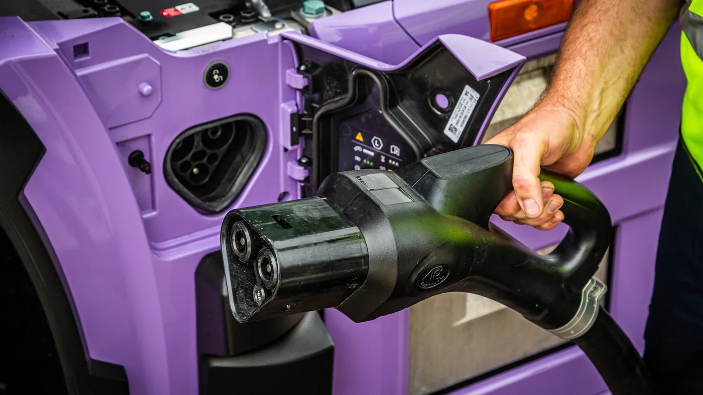

MAN Truck & Bus UK publicó el 8 de septiembre de 2026 una experiencia de carga de alta potencia de Russell Group en su base ferroviaria de Coatbridge, Escocia. La demostración utilizó un eTGX equipado con conexión MCS y una instalación preparada para ese sistema.
Según el operador, las unidades pueden pasar del 20% al 90% de batería en unos 30 minutos bajo las condiciones indicadas. El comunicado describe un eTGX 20.544 4x2 con 480 kWh de baterías, conexión MCS y otro punto CCS. El dato de tiempo es una prestación comunicada por la empresa, no una garantía para cualquier cargador o jornada.
La publicación corresponde a esta semana, mientras que el encuentro se ubica en la anterior. Russell informa cuatro camiones eléctricos MAN en operación y proyecta llegar a 14 a comienzos de 2027. Ese crecimiento es un plan, no una flota ya completada.
La parada pasa a formar parte del diseño del servicio
Análisis de Zabala Repuestos. Para entender el interés de la experiencia, conviene mirar el recorrido completo. Un camión necesita energía disponible en el momento en que puede detenerse. La coordinación entre unidad, instalación y horarios puede ser tan relevante como una cifra de autonomía.
Una base habitual permite estudiar esa coordinación con información propia: cuándo llegan los vehículos, cuánto tiempo permanecen y qué trabajo deben realizar después. El objetivo es evaluar si la carga encaja en la jornada y qué margen existe ante cambios del servicio.
Potencia anunciada y tiempo real son datos distintos
Una cifra máxima no describe por sí sola toda una sesión. Para comparar propuestas interesa conocer la energía entregada, el estado inicial y final de la batería y la duración completa. Esos datos permiten interpretar qué ocurrió durante la parada.
También conviene preguntar qué condiciones respaldan el resultado. Una presentación puede mostrar una experiencia concreta y valiosa, pero la decisión de otra flota necesita relacionarla con sus propios equipos, recorridos y disponibilidad de infraestructura.

El cargador también necesita un plan de disponibilidad
Al evaluar una instalación, es útil saber cómo se organiza la asistencia y qué ocurre si un punto queda fuera de servicio. Una flota puede tener vehículos listos para trabajar y aun así necesitar una alternativa para abastecerlos en el horario previsto.
La planificación debería describir responsables, canales de aviso y opciones acordadas. Eso ayuda a que una interrupción pueda gestionarse con información clara y a que el operador conozca los límites de la propuesta antes de ampliar la cantidad de unidades.
Qué observar durante una prueba piloto
Un piloto puede registrar llegada, inicio de carga, finalización y salida. Si aparecen esperas, conviene dejar asentada su causa: ocupación del punto, cambios de turno o una incidencia. Esa separación permite identificar dónde se concentra el tiempo.
También interesa conservar las características del trabajo posterior. Una sesión puede resultar suficiente para un recorrido y requerir otra planificación para uno diferente. El resultado más útil explica para qué servicio funciona la experiencia y qué condiciones deben mantenerse.
La mirada desde Argentina
Esta noticia describe una aplicación británica. Para estudiar un proyecto local, el punto de partida sería una misión concreta y la confirmación de una solución disponible para atenderla. La presencia de una tecnología en otro mercado no define su oferta comercial en el país.
Transportista, proveedor del vehículo y responsable de infraestructura deberían trabajar sobre la misma descripción de la jornada. Así se pueden relacionar los tiempos previstos con las necesidades de mantenimiento, capacitación y atención técnica durante la operación.
El crecimiento debe acompañarse con evidencia
Antes de aumentar el número de camiones, conviene revisar los resultados del conjunto. La experiencia acumulada puede mostrar qué horarios requieren ajustes, qué información necesita el conductor y qué recursos de asistencia deben reforzarse.
El caso Russell aporta una imagen concreta de esa transición: el camión y el punto de carga como partes del mismo servicio. Su valor para quienes siguen el transporte pesado está en observar cómo una prestación técnica se integra con la organización diaria y qué resultados produce al repetirse en el trabajo real.